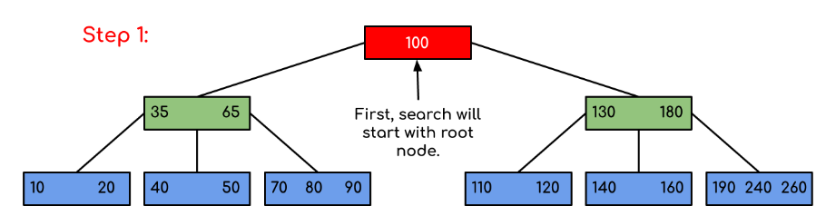
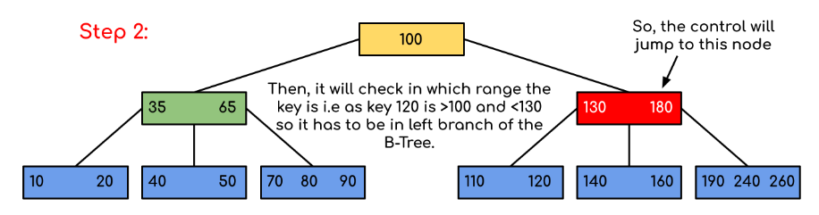

B Tree. 1. Introduction
B-Tree. 1. Introduction
Introduction: B-Tree is a self-balancing search tree. In most of the other self-balancing search trees (like AVL and Red-Black Trees), it is assumed that everything is in main memory. To understand the use of B-Trees, we must think of the huge amount of data that cannot fit in main memory. When the number of keys is high, the data is read from disk in the form of blocks. Disk access time is very high compared to the main memory access time. The main idea of using B-Trees is to reduce the number of disk accesses. Most of the tree operations (search, insert, delete, max, min, ..etc ) require O(h) disk accesses where h is the height of the tree. B-tree is a fat tree. The height of B-Trees is kept low by putting maximum possible keys in a B-Tree node. Generally, the B-Tree node size is kept equal to the disk block size. Since the height of the B-tree is low so total disk accesses for most of the operations are reduced significantly compared to balanced Binary Search Trees like AVL Tree, Red-Black Tree, ..etc.
Time Complexity of B-Tree:
| Sr. No. | Algorithm | Time Complexity |
|---|---|---|
| 1. | Search | O(log n) |
| 2. | Insert | O(log n) |
| 3. | Delete | O(log n) |
“n” is the total number of elements in the B-tree. Properties of B-Tree:
- All leaves are at the same level.
- A B-Tree is defined by the term minimum degree ‘t’. The value of t depends upon disk block size.
- Every node except root must contain at least (ceiling)([t-1]/2) keys. The root may contain minimum 1 key.
- All nodes (including root) may contain at most t – 1 keys.
- Number of children of a node is equal to the number of keys in it plus 1.
- All keys of a node are sorted in increasing order. The child between two keys k1 and k2 contains all keys in the range from k1 and k2.
- B-Tree grows and shrinks from the root which is unlike Binary Search Tree. Binary Search Trees grow downward and also shrink from downward.
- Like other balanced Binary Search Trees, time complexity to search, insert and delete is O(log n).
Following is an example of B-Tree of minimum order 5. Note that in practical B-Trees, the value of the minimum order is much more than 5.

We can see in the above diagram that all the leaf nodes are at the same level and all non-leaf have no empty sub-tree and have keys one less than the number of their children. Interesting Facts:
- The minimum height of the B-Tree that can exist with n number of nodes and m is the maximum number of children of a node can have is:
2. The maximum height of the B-Tree that can exist with n number of nodes and d is the minimum number of children that a non-root node can have is: and Traversel in B-Tree: Traversal is also similar to Inorder traversal of Binary Tree. We start from the leftmost child, recursively print the leftmost child, then repeat the same process for remaining children and keys. In the end, recursively print the rightmost child.
Search Operation in B-Tree: Search is similar to the search in Binary Search Tree. Let the key to be searched be k. We start from the root and recursively traverse down. For every visited non-leaf node, if the node has the key, we simply return the node. Otherwise, we recur down to the appropriate child (The child which is just before the first greater key) of the node. If we reach a leaf node and don’t find k in the leaf node, we return NULL.
Logic: Searching a B-Tree is similar to searching a binary tree. The algorithm is similar and goes with recursion. At each level, the search is optimised as if the key value is not present in the range of parent then the key is present in another branch. As these values limit the search they are also known as limiting value or separation value. If we reach a leaf node and don’t find the desired key then it will display NULL.
Example: Searching 120 in the given B-Tree.
Solution:



In this example, we can see that our search was reduced by just limiting the chances where the key containing the value could be present. Similarly if within the above example we’ve to look for 180, then the control will stop at step 2 because the program will find that the key 180 is present within the current node. And similarly, if it’s to seek out 90 then as 90 < 100 so it’ll go to the left subtree automatically and therefore the control flow will go similarly as shown within the above example.
// Java program to illustrate the sum of two numbers
// A BTree
class Btree {
public BTreeNode root; // Pointer to root node
public int t; // Minimum degree
// Constructor (Initializes tree as empty)
Btree(int t) {
this.root = null;
this.t = t;
}
// function to traverse the tree
public void traverse() {
if (this.root != null)
this.root.traverse();
System.out.println();
}
// function to search a key in this tree
public BTreeNode search(int k) {
if (this.root == null)
return null;
else
return this.root.search(k);
}
}
// A BTree node
class BTreeNode {
int[] keys; // An array of keys
int t; // Minimum degree (defines the range for number of keys)
BTreeNode[] C; // An array of child pointers
int n; // Current number of keys
boolean leaf; // Is true when node is leaf. Otherwise false
// Constructor
BTreeNode(int t, boolean leaf) {
this.t = t;
this.leaf = leaf;
this.keys = new int[2 * t - 1];
this.C = new BTreeNode[2 * t];
this.n = 0;
}
// A function to traverse all nodes in a subtree rooted with this node
public void traverse() {
// There are n keys and n+1 children, travers through n keys
// and first n children
int i = 0;
for (i = 0; i < this.n; i++) {
// If this is not leaf, then before printing key[i],
// traverse the subtree rooted with child C[i].
if (this.leaf == false) {
C[i].traverse();
}
System.out.print(keys[i] + " ");
}
// Print the subtree rooted with last child
if (leaf == false)
C[i].traverse();
}
// A function to search a key in the subtree rooted with this node.
BTreeNode search(int k) { // returns NULL if k is not present.
// Find the first key greater than or equal to k
int i = 0;
while (i < n && k > keys[i])
i++;
// If the found key is equal to k, return this node
if (keys[i] == k)
return this;
// If the key is not found here and this is a leaf node
if (leaf == true)
return null;
// Go to the appropriate child
return C[i].search(k);
}
}
The above code doesn’t contain the driver program. We will be covering the complete program in our next post on B-Tree Insertion. There are two conventions to define a B-Tree, one is to define by minimum degree (followed in Cormen book), second is define by order. We have followed the minimum degree convention and will be following same in coming posts on B-Tree. The variable names used in the above program are also kept same as Cormen book for better readability.
Insertion and Deletion B-Tree Insertion B-Tree Deletion
References: Introduction to Algorithms 3rd Edition by Clifford Stein, Thomas H. Cormen, Charles E. Leiserson, Ronald L. Rivest Please write comments if you find anything incorrect, or you want to share more information about the topic discussed above.
Attention reader! Don’t stop learning now. Get hold of all the important DSA concepts with the DSA Self Paced Course at a student-friendly price and become industry ready. To complete your preparation from learning a language to DS Algo and many more, please refer Complete Interview Preparation Course.